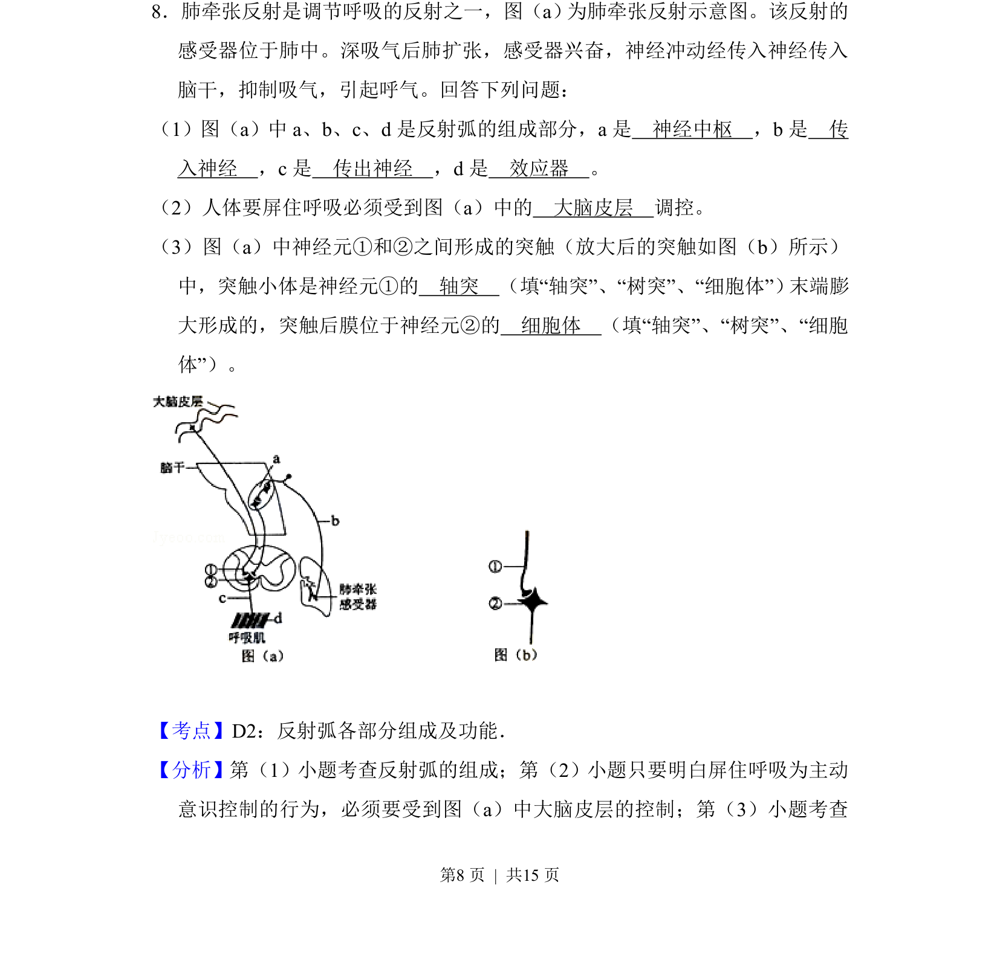
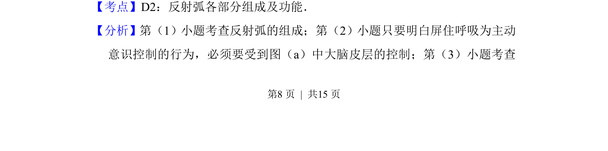
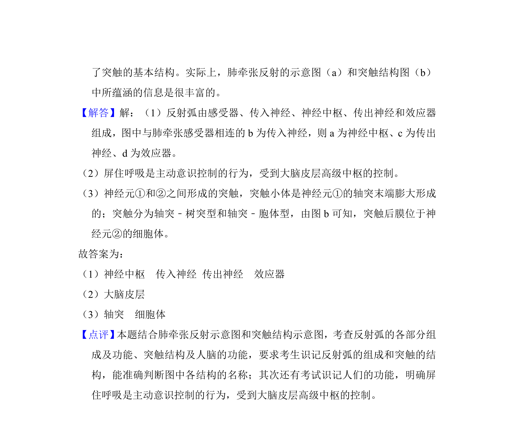

考点：反射弧 突触 神经调节

该题考查反射弧的组成、大脑皮层对呼吸的调控及突触结构。


📄 原 PDF 第 8 页：
素材/真题/吉林/2008-2024·（吉林）生物高考真题/2012年高考生物试卷（新课标）（解析卷）.pdf
8．肺牵张反射是调节呼吸的反射之一，图（a） 为肺牵张反射示意图。该反射的 感受器位于肺中。深吸气后肺扩张，感受器兴奋，神经冲动经传入神经传入 脑干，抑制吸气，引起呼气。回答下列问题： （1）图（a）中a、b、c、d是反射弧的组成部分，a是 神经中枢 ，b是 传 入神经 ，c是 传出神经 ，d是 效应器 。 （2）人体要屏住呼吸必须受到图（a）中的 大脑皮层 调控。 （3）图（a）中神经元①和②之间形成的突触（放大后的突触如图（b）所示） 中，突触小体是神经元①的 轴突 （填“轴突”、“树突”、“细胞体”） 末端膨 大形成的，突触后膜位于神经元②的 细胞体 （填“轴突”、“树突”、“细胞 体”）。
【考点】D2：反射弧各部分组成及功能．菁优网版权所有 【分析】第（1）小题考查反射弧的组成；第（2）小题只要明白屏住呼吸为主动 意识控制的行为，必须要受到图（a）中大脑皮层的控制；第（3）小题考查